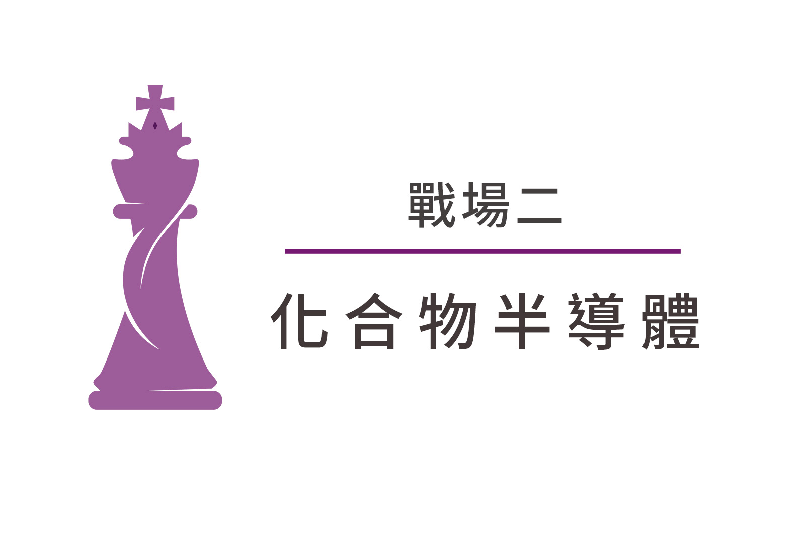

四大關鍵戰場
SEMI於2022年7月發布的半導體設備預測報告指出，受惠於半導體製造及封測設備需求皆大幅成長，其中：晶圓製造設備，含晶圓加工、晶圓廠設施和光罩設備，2022年支出將衝上1,010 億美元業界新紀錄，增幅達15.4%，2023年設備採購預期將維持1,000億美元以上。

綠能、電動車、5G AIoT應用、智慧醫療跟航太等產業的蓬勃發展將拉升市場對碳化矽（SiC）跟氮化鎵（GaN）等化合物半導體的需求，從資料中心裡的伺服器、網通設備，到手機RF 功率放大器、供應電力的功率元件，也都因化合物半導體的普遍運用，在性能上出現重大突破。
ESG不僅是台灣半導體產業下一個十年的關鍵競爭力，更是牽動著全球產業及供應鏈。晶圓製造需要消耗大量的能源，更需要投入綠色製程，未來將透過研發提供更省電、高效的產品，減少耗能與温室氣體的排放。
後疫情時代，在數位經濟與轉型浪潮下，數位應用安全已是顯學。半導體製造業為提高生產效率和良率，大幅度提升產線智慧化，資訊安全風險及隨之而來的營運危機，成為整個產業永續經營上必須正視的重要課題。


SEMICON Taiwan 2022國際半導體展
全台年度最大半導體盛事SEMICON Taiwan 2022國際半導體展將於9月14日至16日於台北南港展覽館一館盛大登場。今年展覽規模亦再創27年新高，吸引700家國內外廠商參與，共計推出2,400個展覽攤位。探討全球半導體產業重要的七大議題，包括先進製程、異質整合、化合物半導體、車用晶片、智慧製造、ESG永續、半導體資安等發展趨勢，持續引領全球半導體產業下世代關鍵技術之發展交流，以迎接未來數十年產業發展的黃金時代。